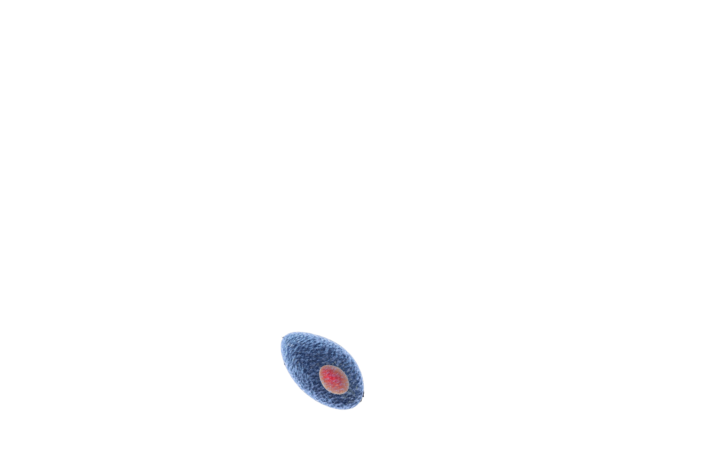
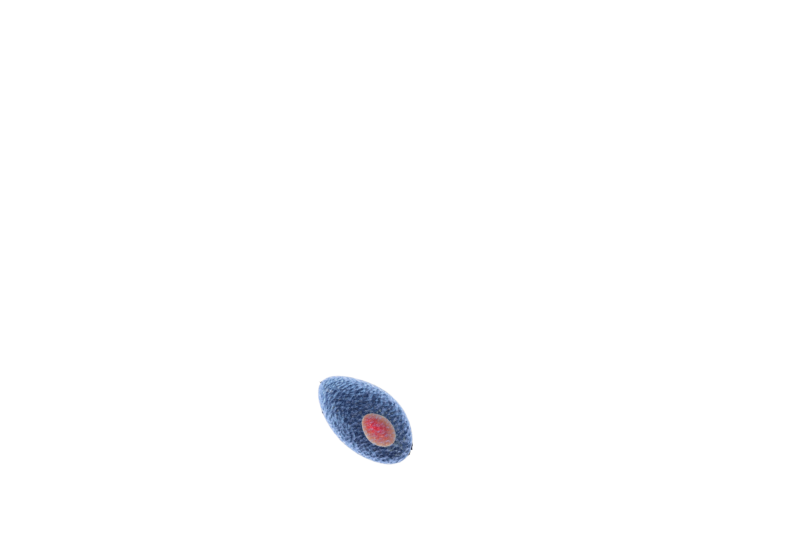

La Parasitología es la parte de la biología que estudia los parásitos y su relación con el hospedaje, especialmente con el humano.
Nació como una disciplina dentro de la Zoología, y en sus orígenes fue esencialmente descriptiva. En consecuencia, los primeros parásitos descritos fueron metazoos, y con el empleo posterior del microscopio se amplió al campo de la Protozoología. La expansión colonial europea y la constatación de los graves problemas para la salud humana y de los animales, que son causados por parásitos sobre todo en las zonas tropicales, conllevaron un aumento en el interés médico por la parasitología. Como consecuencia, la parasitología comenzó a estudiarse desde una perspectiva etiológica-patológica, en la que la relación parásito-hospedador desempeña un papel clave. Los llamativos mecanismos de adaptación presentes en estos sorprendentes organismos pronto estimularon estudios más profundos.
Fruto del interés por estos organismos, cabe mencionar que muchos avances en la ciencia básica se han producido a partir de las investigaciones con parásitos.
La importancia de los parásitos desde una perspectiva sanitaria es indiscutible. Estimaciones de la Organización Mundial de la Salud indican que hay más de 260 millones de personas que padecen malaria, 200 millones sufren esquistosomiasis, 500 millones de afectados por amebiasis, 700 millones con ascariasis, y más de 40 millones con patologías producidas por tripanosomátidos (la enfermedad del sueño, la enfermedad de Chagas o las leishmaniasis).
La parasitología medica es el área más avanzada de la medicina. A diferencia de otras, ahora las enfermedades parasitarias son diagnosticables, curables y prevenibles.
La parasitología se inicia con el hallazgo de los parásitos por el hombre, hecho que tiene su origen en los tiempos más remotos y que se pierden en la bruma del pasado histórico de la humanidad, pero los descubrimientos a este respecto por los antiguos chinos, griegos, egipcios, persas etc., han quedado consignados de tal manera que el estudiante es capaz de reconocerlos por el análisis de los manuscritos que dejaron para la posteridad, en los cuales se plasman los adelantos que sobre los parásitos y enfermedades parasitarias se realizaron hace muchísimo tiempo.
Desde tiempos antiguos los pueblos de todas las culturas han tratado de explicar las causas de la enfermedad y la muerte, para lo cual han combinado conceptos religiosos, mágicos, demoníacos, astrólogos, y en los últimos siglos explicaciones científicas.
Los conceptos sobre el origen de las enfermedades, entre la que incluyen las producidas por parásitos, se fueron transmitiendo por la tradición oral, como aparece en la biblia y luego en el invento de la estructura es registros escritos. Posiblemente a finales del siglo IV antes de Cristo se dejaron registros sobre la practica medica de esos tiempos.
Actualmente se dispone de muchos escritos médicos sobre las enfermedades comunes de los pueblos antiguos, pero los principales son los
papiros de la época faraónica.
Ebers (1550 a C) en donde recopila gran información de las llamadas enfermedades internas y se mezcla la magia y la ciencia.
El llamado papiro de Berlín (1500 a C) trata sobre enfermedades de los niños y en el papiro Chester Beatty (1300 a C) se hace referencia a las enfermedades digestivas.
Los términos
gusano y
verme
aparecen en los escritos egipcios explicando conceptos sobre las dolencias del cuerpo y del espíritu, las que relacionan con el demonio.
Se mencionan específicamente en el papiro Anastasio y se hace referencia al
quinto gusano que pica el diente.
En los primeros siglos se tenía gran fe en el poder mágico de las palabras y se utilizaron conjuros para las curaciones. Estas creencias llegaron hasta la edad media y en esta época se conoció en:
conjuro de tegernsee para los gusanos
que en traducción del lenguaje de este tiempo dice:
gusano arrástrate hacia afuera, acompañado por nueve gusanitos
.
Varias ideas erróneas se afirmaron como científicas.
Referencias precisas sobre parásitos intestinales y sus complicaciones aparecen en la biblia. La ley mosaica se refiere a los cerdos, animales que han sido importantes resevorios de parásitos como triquinosis, cisticercosis y otras infecciones bacterianas que producían problemas de salud en los israelitas y otros pueblos que comían carne cruda de estos animales.
El reino protista y el subreino protozoa, agrupan los organismos unicelulares parásitos que siempre hemos denominado protozoos o protozoarios, unos de vida libre y otro parásito de animales y plantas.
Son microscópicos y se localiza en diferentes tejidos. Algunos son inofensivos, otros producen daños importantes que trastornan las funciones vitales con producción de enfermedad y en ciertos casos la muerte del huésped.
METABOLISMO
Se lleva a cabo en las vacuolas donde se producen enzimas digestivas.
Los residuos de este metabolismo se eliminan a través de la membrana celular, en algunas especies se hace por orificio excretor llamado citopigio, en otras solo se liberan los residuos cuando sucede la ruptura de la célula, como es el cómo de la liberación del pigmento malarico en los protozoos del genero Plasmodium.


GENERALIDADES SOBRE ARTRÓPODOS
El termino artrópodo significa ‘’patas articuladas y se utiliza para designar el inmenso número de animales pequeños invertebrados, que tienen exoesqueleto quitinoso, cuerpo segmentado y simétrico bilateralmente.
Poseen una cavidad interna o hemolinfa que actúa como aparato circulatorio. El sistema nervioso es rudimentario y de tipo ganglionar. El aparato digestivo está bien desarrollado, lo mismo que algunos órganos de desarrollo, lo mismo que algunos órganos de los sentidos. Existen sexos separados y presentan frecuentemente una gran actividad reproductiva como metamorfosis completa o incompleta.
El estudio de los artrópodos constituye una ciencia de gran importancia dentro de la biología y con mucha aplicación en varias áreas como son agricultura, ecología, veterinaria y medicina. La mayoría de los artrópodos desempeñan un papel un papel benéfico en la naturaleza al participar en el equilibrio ecológico del medio ambiente.

Los helmintos o vermes, comúnmente llamados gusanos, son seres multicelulares o metazoarios, ampliamente distribuidos en la naturaleza. Muchos de ellos viven libremente y otros se han adaptado a llevar vida parasitara en vegetales, animales o en el hombre.
Existe similitud aparente entre los gusanos de la vida libre y los parásitos, pero realmente hay grandes diferencias entre ellos, adquiridas a través de los siglos.
El helminto parásito tiene tal grado de especialización que algunos no pueden vivir sino en ciertos huéspedes y en ellos presentan localizaciones determinada.
MORFOLOGÍA Y FISIOLOGÍA
Los nemathelmintos o nematodos son gusanos de cuerpo y los platelmintos cilíndricos, cavidad corporal y tubo digestivo. Los platelmintos son aplanados, sin cavidad corporal y aparato digestivo muy rudimentario, se dividen en cestodos con cuerpo segmentado como las tenias y los trematodos no segmentados. Todos presentan el sistema reproductor muy desarrollado y la mayoría de las plathelmintos hermafroditas.
Muchos han adquirido órganos de fijación, con ganchos o ventosas. El sistema excretor es sencillo, usualmente constituido por tubos colectores que desembocan al exterior del parásito.
Algún helminto tiene la capacidad de trasladarse por movimientos reptantes. No hay un sistema circulatorio propiamente y carecen de aparato respiratorio; la mayoría son anaerobios facultativos.